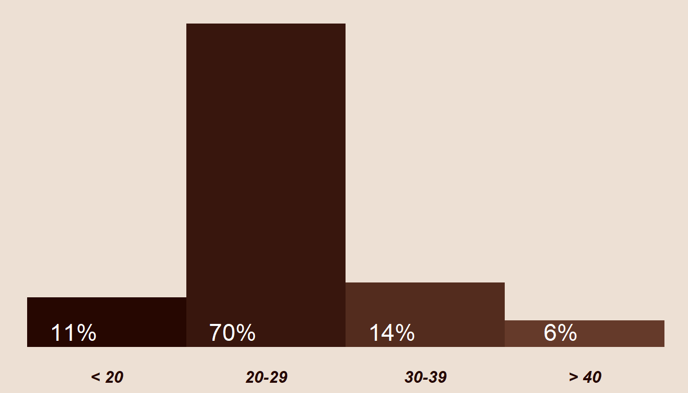
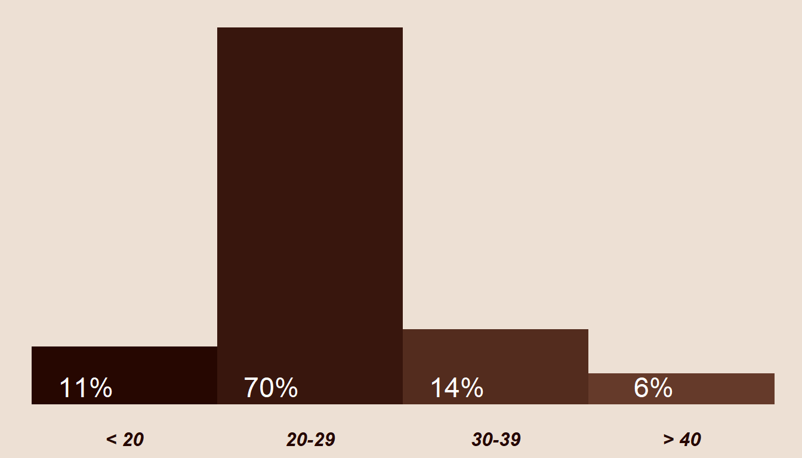
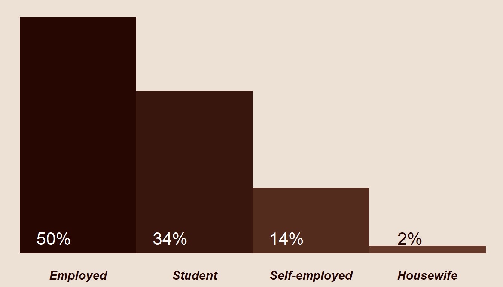
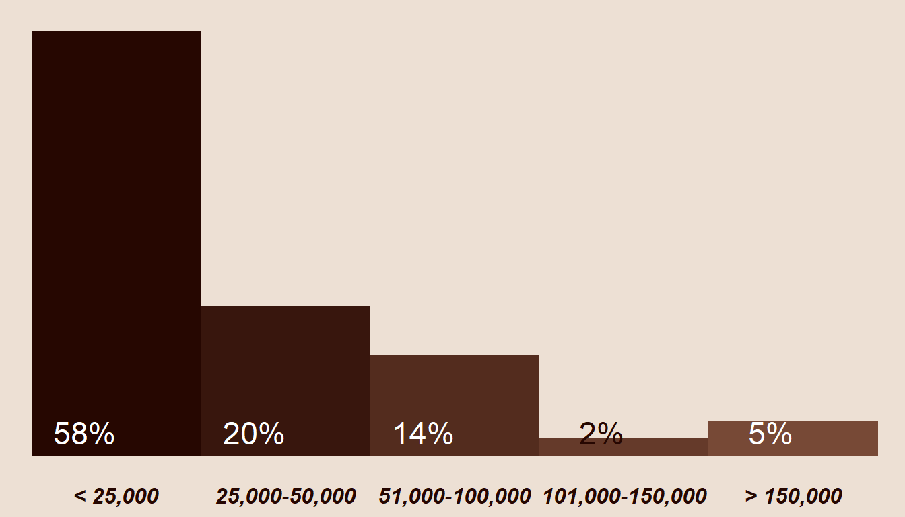

Understanding customers and their present and future intentions toward the coffee house, with a focus on gaining valuable insights capable of imporving future customer retention and revenue.
The coffee house has consistently delivered high-quality coffee and pastry services to a diverse customer base, ensuring the fulfillment of elevated customer expectations. Over the years, coffee house has maintained a commendable customer retention rates.
Demonstrating a commitment to valuing customer feedback and prioritizing continuous improvement in customer satisfaction, Coffee house has decided to conduct a thorough analysis of the factors that have led to a drop in customer retention and revenue.
The primary objective is to gain a comprehensive understanding of the underlying reasons for these trends and explore viable strategies to enhance customer satisfaction and, consequently, retention. By implementing these improvements, coffee house aims to not only reverse the decline but also elevate overall revenue, aligning with its commitment to providing an exceptional customer experience.
The respondents include a diverse mix of individuals, consisting of both existing customers and potential clientele. This diversity extends across various demographic factors, such as age group, gender, employment status, and annual income. To gain a detailed understanding of the respondent demographics and characteristics, participants voluntarily provided this information in the survey. In the following section, we will look into these features to analyze and interpret the respondent profile thoroughly.

The predominant age group among respondents falls within the young adult category, particularly between the ages of 20 and 29. A mere 11% of participants are below 20 years old, showcasing a smaller representation in this younger age bracket. In contrast, a modest 6% of respondents are aged 40 and above, making them the least represented age group in the survey.
Among the total respondents, 53% are female, while the remaining 47% identify as male.
53%
47%

Half of the respondents are presently employed, which represent a significant portion of the participant pool. The second-largest group in terms of employment status consists of students, making up 34% of the respondents. Additionally, approximately 14% of respondents are self-employed, while the smallest group is comprised of stay-at-home spouses.

The breakdown of respondents by annual income highlights that the majority fall below the RM100,000 threshold. More precisely, 58% report an annual income below RM25,000, while 20% fall within the income range of RM25,000 to RM50,000. Additionally, 14% of respondents have an annual income ranging from RM51,000 to RM100,000. Those with an annual income exceeding RM100,000 constitute only 7% of the total respondents.